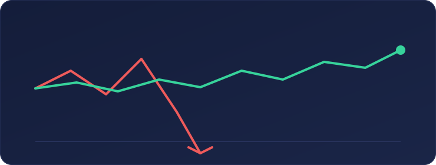
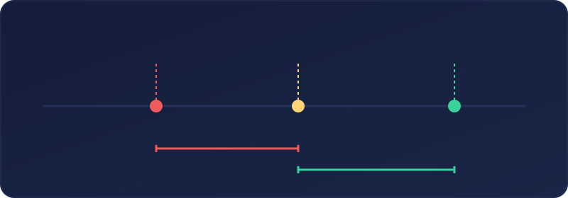
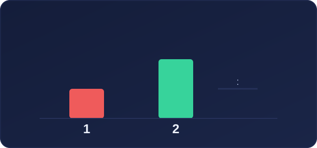
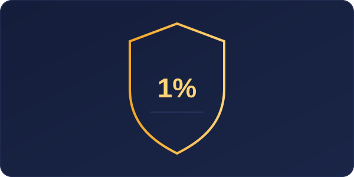

Cuando una persona descubre el trading, normalmente busca respuestas a preguntas como: «¿Qué indicador funciona mejor?», «¿cuándo debo comprar?» o «¿qué estrategia da más señales?». Sin embargo, hay una pregunta anterior y mucho más importante: ¿qué ocurre si mi operación sale mal?
La gestión del riesgo no es la parte más llamativa del trading, pero sí es una de las que más condiciona la supervivencia de una cuenta. Puedes tener una buena idea, interpretar correctamente un gráfico e incluso acertar varias operaciones seguidas. Pero si arriesgas demasiado en una sola operación, una mala decisión puede borrar semanas o meses de trabajo.
El primer objetivo no es ganar: es permanecer
Los mercados seguirán abiertos mañana, la semana que viene y el año que viene. No hace falta arriesgarlo todo en una sola oportunidad. El objetivo inicial de una persona que aprende trading debería ser proteger su capital y ganar experiencia. Una cuenta que sufre pérdidas controladas permite seguir aprendiendo; una cuenta que se queda sin saldo obliga a empezar de cero.
Esta idea cambia la forma de mirar el mercado. En lugar de pensar solo en el posible beneficio, se empieza a pensar en:
- Cuánto puedo perder si mi análisis es incorrecto.
- Dónde queda invalidada mi idea.
- Qué tamaño de posición debo utilizar.
- Si el posible beneficio compensa el riesgo asumido.

El tamaño de posición importa más de lo que parece
Una misma operación puede ser razonable o extremadamente arriesgada dependiendo del tamaño de posición. Por ejemplo, dos personas pueden comprar el mismo activo en el mismo punto y usar el mismo stop loss. Pero si una utiliza un tamaño de posición mucho mayor, su pérdida potencial será muy distinta. Por eso, antes de abrir una operación, hay que definir tres elementos:
- El punto de entrada.
- El lugar lógico del stop loss.
- El importe máximo que estás dispuesto a perder.
Solo después se debería calcular el tamaño de la posición. Hacerlo al revés —elegir un lote grande y buscar después dónde poner el stop— suele ser una mala práctica.

El stop loss no es una derrota
El stop loss es una orden que busca cerrar automáticamente una operación cuando el precio alcanza un nivel de pérdida previamente definido. Muchos principiantes evitan usarlo porque sienten que aceptar una pérdida equivale a reconocer que estaban equivocados. Otros lo colocan, pero lo alejan cuando el precio se aproxima, esperando que el mercado «vuelva». El problema es que una pérdida pequeña y prevista puede convertirse así en una pérdida mucho mayor.
Un stop loss no garantiza una ejecución perfecta en todo momento, especialmente en condiciones de alta volatilidad. Pero sigue siendo una herramienta fundamental para limitar el daño cuando una operación no evoluciona como se esperaba. Usar un stop no es pesimismo. Es aceptar una realidad básica: ninguna estrategia acierta siempre.
Una pérdida grande cuesta mucho más de recuperar
Cuanto mayor es la pérdida, mayor es el esfuerzo necesario para volver al punto de partida. Si una cuenta pierde el 10 %, necesita aproximadamente un 11 % de rentabilidad sobre el saldo restante para recuperarse. Pero si pierde el 50 %, necesita ganar un 100 % para volver al nivel inicial.
Por eso las grandes pérdidas hacen tanto daño. No solo reducen el saldo: aumentan la presión emocional y empujan a muchas personas a operar de forma impulsiva para recuperar rápido. La gestión del riesgo intenta evitar precisamente ese círculo.
Relación riesgo-beneficio: no se trata solo de acertar
La relación riesgo-beneficio compara lo que se arriesga con lo que se espera ganar. Por ejemplo, una relación 1:2 significa que, por cada unidad de riesgo, el objetivo potencial equivale a dos unidades de beneficio. No es una garantía de resultado, pero ayuda a evaluar si una operación tiene una estructura coherente.

Esto enseña algo importante: no es imprescindible acertar todas las operaciones para obtener un resultado positivo a largo plazo. Una persona podría tener operaciones perdedoras y ganadoras, pero si limita las pérdidas y deja que las operaciones favorables compensen adecuadamente, el resultado global puede ser distinto. No obstante, una relación riesgo-beneficio atractiva no convierte una mala entrada en una buena operación. Debe ir acompañada de un plan y de una gestión adecuada.
El riesgo emocional: miedo, codicia y venganza
Muchas pérdidas no vienen de un error técnico. Vienen de una emoción. Las más habituales son:
- Miedo a quedarse fuera: entrar tarde en un movimiento ya desarrollado.
- Codicia: aumentar el tamaño de la posición o no cerrar cuando el plan indicaba hacerlo.
- Venganza: abrir otra operación apresurada para recuperar una pérdida anterior.
- Exceso de confianza: asumir más riesgo después de varias operaciones favorables.
- Miedo tras una pérdida: dejar pasar operaciones válidas por temor a volver a fallar.
El objetivo no es no sentir estas emociones. Es imposible. El objetivo es no permitir que decidan por nosotros. Una buena práctica es crear reglas simples antes de operar: riesgo máximo por operación, número máximo de operaciones al día, pérdida máxima diaria y condiciones claras para dejar de operar.

Sobreoperar también es arriesgar
Operar demasiado suele ser uno de los errores más caros. Cuando una persona siente que debe aprovechar cada vela o cada movimiento, termina entrando en operaciones de baja calidad. La sobreoperación puede provocar:
- Más comisiones y costes.
- Más exposición al mercado.
- Más cansancio mental.
- Menos selectividad.
- Mayor probabilidad de operar por aburrimiento o frustración.
No operar también es una decisión. A veces, la mejor operación del día es la que se descarta porque no cumple el plan.
La consistencia está en las reglas
Una operación aislada no define a un trader. Puedes hacer un análisis correcto y perder, o tomar una mala decisión y ganar. A corto plazo interviene la incertidumbre. Lo que importa es repetir un proceso sensato durante muchas operaciones:
- Analizar antes de entrar.
- Definir el riesgo.
- Respetar el tamaño de posición.
- Colocar el stop loss.
- No modificar las reglas por una emoción momentánea.
- Registrar el resultado y revisarlo después.
La consistencia no consiste en ganar todos los días. Consiste en aplicar el mismo criterio incluso cuando una operación no sale como esperabas.
Una lista sencilla antes de abrir una operación
Antes de pulsar el botón de compra o venta, puede ser útil responder a estas preguntas:
- ¿Cuál es mi idea y qué la invalida?
- ¿Dónde va mi stop loss?
- ¿Cuánto dinero representa esa pérdida?
- ¿Qué tamaño de posición corresponde a ese riesgo?
- ¿Cuál es mi objetivo y qué relación tiene con el riesgo?
- ¿Estoy entrando por mi plan o por una emoción?
- ¿He revisado si hay noticias importantes o alta volatilidad?
- ¿Acepto esta pérdida si la operación sale mal?
Si no puedes responder con claridad, quizá la operación todavía no está preparada.
Conclusión
La gestión del riesgo no hace que el trading sea fácil ni elimina las pérdidas. Lo que hace es evitar que una sola operación tenga el poder de destruir una cuenta. El trader no controla el mercado. No controla las noticias, la volatilidad ni el resultado de la siguiente vela. Pero sí puede controlar el tamaño de la posición, el punto de salida, la cantidad arriesgada y la disciplina con la que sigue su plan.
Antes de pensar en ganar rápido, aprende a perder poco. Esa es una de las bases más importantes para poder seguir aprendiendo mañana.
Este artículo tiene finalidad educativa y divulgativa. No constituye asesoramiento financiero ni una recomendación de inversión. Toda operación implica riesgo y puede generar pérdidas.